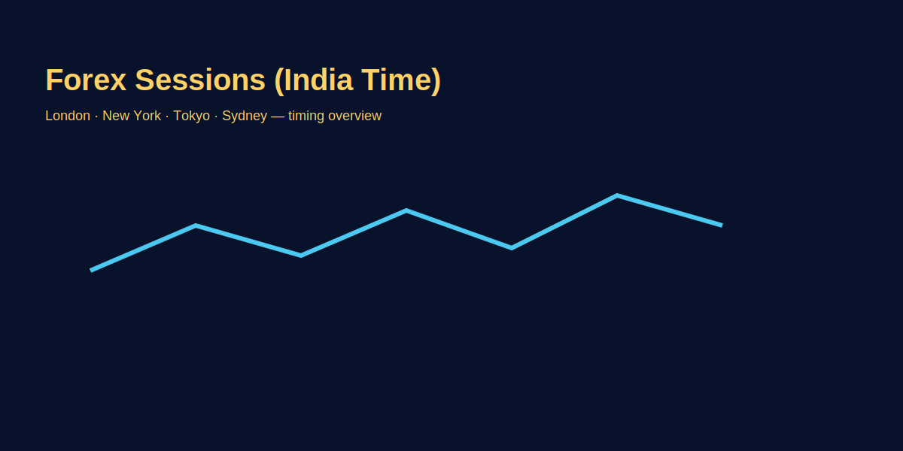

Forex Market Sessions (India Time)
Problem-based introduction
India ke traders ko session timings samajhna important hai — kyunki liquidity, spread aur volatility sessions ke hisaab se change hote hain. Is article mein India time (IST) mein session windows, overlap zones, aur GOLD (XAU/USD) ke liye practical trading windows discuss karenge.
Step-by-step explanation
- Tokyo/Asian session (IST ~ 3:30 am – 12:30 pm): Lower liquidity for some pairs; gold trades with Asian liquidity and can have quieter moves.
- London session (IST ~ 12:30 pm – 8:30 pm): High liquidity for EUR/USD and XAU/USD — often the best time for breakout strategies.
- New York session (IST ~ 6:30 pm – 2:30 am): Overlap with London in early hours; high volatility around US macro releases, impacts GOLD strongly.
- Overlap windows: London–New York overlap (IST ~6:30 pm–8:30 pm) best for liquidity and tighter spreads.
Real trading logic (GOLD example)
For GOLD (XAU/USD), London and New York sessions produce most of the volume. A practical approach:
- Use London session for trend identification; use New York for confirmation and entries when macro data arrives.
- Avoid entering large positions in low-liquidity Asian hours or right before major US news.
Session-specific playbooks (IST)
- Asian (3:30 am – 12:30 pm): Range-bound bias; plan mean-reversion scalps with tight stops. Avoid illiquid crosses; XAU/USD micro-size only.
- London (12:30 pm – 8:30 pm): Best liquidity. Use breakout + retest ideas; wait for stop-sweeps on Asian highs/lows before entering.
- NY overlap (6:30 pm – 8:30 pm): Highest volatility; trade only well-defined setups. Spreads tight but spikes possible around US data.
- Late NY (post 11 pm): Liquidity thins; spreads widen. Prefer flat or very small size.
Spread & slippage expectations
Session ke hisaab se spread and slippage change hote hain. Broker ki execution model (ECN vs MM) aur news calendar bhi impact karte hain. Practical guardrails:
- Asian: expect wider spreads on minors/exotics; gold spread 30–80 cents typical. Use limit orders.
- London open: spreads compress; use stop-limit or limit to avoid surprise wicks.
- NY data minutes: spreads spike; predefine max slippage budget (e.g., 0.2R) and reduce size.
Image-based examples (mandatory)
Image: timeline of sessions in IST with overlap highlights.

Visual: Asia sets range, London sweeps extremes, NY overlap drives real move.
Pre-trade checklist (IST)
- Check calendar: US data? speeches? If yes, size half or wait.
- Mark Asia high/low; expect fake breaks early London.
- Note spread live: if 2–3x normal, stand aside.
- Define risk in INR or USD absolute — no % guesswork.
- Set alerts at session extremes; avoid chasing mid-range.
Two ready-to-use setups (Hinglish)
- London stop-sweep to continuation (XAU/USD): Asia high/low mark karo. London open pe quick sweep aaye to wait for 5–15 min rejection candle; enter with stop 0.5R beyond wick; target 2–3R toward opposite side or NY overlap extension.
- NY news fade: Big spike on US data that retraces inside pre-news range within 15–30 minutes. Enter opposite with half size, stop beyond spike extreme, target mid-range. Use only when spread normalizes.
Dono setups tabhi lo jab spread normal ho aur position sizing clearly defined ho. Agar execution slip kare to trade skip karo; survival pe focus rakho.
Numbers that keep you safe
- Max risk per trade: 0.25%–0.5% of account for intraday gold.
- Max trades per session: 2–3 attempts; bad day? stop early.
- Max slippage budget: 0.2R; agar breach ho to pause till spreads normalize.
Simple rule: live rehna strategy se zyada important hai. Sessions ko respect karo, warna small edges bhi wipe out ho jate hain.
Weekend / holiday adjustments
- US/UK holidays: London/NY liquidity drops; treat like extended Asia.
- Indian holidays: volumes may thin on INR pairs; XAU/USD still trades globally but watch spreads.
- Friday late NY: avoid holding fresh intraday gold trades into illiquid close unless planned swing with small size.
Common Mistakes
Session Microstructure: How Smart Money Moves Between Sessions
Each session mein different participant set active hote hain, aur yeh price movement aur liquidity pattern decide karta hai:
- Asia (Tokyo, Singapore, Hong Kong) — IST 3:30 am to 12:30 pm: Exporters hedging, carry trade unwinding, local central bank interventions dominate. Price movements smaller lekin consistent. GOLD typically tight range mein, volatility 20-50 pips intraday normal. BOJ policy communication aa sakta hai jo sudden spikes create karta hai. Asian session traders mostly range-traders aur mean-reversion players.
- London — IST 12:30 pm to 8:30 pm: European banks, hedge funds start their day. They Asia ke overnight price review karte hain aur re-price hota hai. Asia high/low par stop-hunts common hote hain 1-2 hours London open ke baad. London open India traders ke liye best entry window hota hai kyunki volatility increase hota hai aur trend clearer ho jata hai. Major data releases (ECB, BOE) aa sakti hain which move gold 50-200 pips.
- New York — IST 6:30 pm to 2:30 am next day: US traders, institutional flows dominate. NFP, FOMC, Fed speakers—highest impact news items New York session mein aate hain. GOLD ke liye New York mein US dollar data (DXY, rates, inflation expectations) ke basis par sharpe moves. Session average volatility 100-300 pips common hote hain; exaggerated moves possible.
- Overlap window — IST 6:30 pm to 8:30 pm (London–New York): Two largest financial centers both active. Liquidity peak hota hai, spreads tightest (0.1-0.3 pip major pairs, gold 20-40 cents). Volume spike aur price discovery fastest. This window best hoti hai trending setups ke liye aur breakouts ka confirmation bhi yahan mil jata hai.
Practical implication: Asia range ko respect karo; London open swings dekho; NY overlap confirmation ke baad trade lo. This sequence survival ensure karta hai.
GOLD (XAU/USD) Session Volatility Patterns
GOLD futures primarily US hours volume se driven hote hain. Session-specific volatility patterns:
- Average True Range (ATR) by session: Asia session GOLD ATR typically 30-60 pips; London ATR 80-150 pips; New York ATR 120-250 pips. Overlap mein spikes possible (300+ pips intraday swings).
- Asia volatility drivers: BOJ communications, China PMI releases, India RBI policy notes.
- London volatility drivers: ECB rate decisions, UK inflation, Euro weakness vs USD.
- New York volatility drivers: NFP employment data, initial jobless claims, ISM manufacturing/services, Fed speakers, FOMC decisions, real yields shift (10-year Treasury yields).
- Real yields impact: When 10-year US Treasury yield rises sharply, GOLD often sells off (inverse correlation 0.7-0.8); opposite when yields fall. Check US Treasury futures mein move agar GOLD trading karte ho.
Pro setup idea: Thursday/Friday London open pe Asia 10-15 day high/low mark karo. Agar London mein quick sweep aave without follow-through aur US Treasuries ko niche nahi aaye, position 50% close karo remaining 50% New York mein. Agar NY open pe yields suddenly drop, GOLD ka spike expect karo.
India-Specific Trading Window Analysis
India ke traders ko overlap windows special advantage dete hain because Indian time zone uniquely positioned hota hai:
- India best window (IST 6:30 pm - 11:59 pm) — London–New York overlap: Aap exactly high-liquidity zone mein trade kar sakte ho. No middle-of-night trading. Work schedule normal rehti hai.
- India mid-day trading (IST 1:00 pm - 5:00 pm) — London early hours: Agar aap afternoon traders ho, this slot use kar sakte ho. Spreads decent hote hain, volatility emerging hoti hai.
- India morning trading (IST 6:00 am - 12:00 pm) — Asia + London early: Less liquid. Use micro-lot aur tight stops.
- Midnight to early morning (IST 12:30 am - 6:00 am) — New York close + Asia open: Liquidity thins. Avoid unless specific news setup.
Optimal Indian trader schedule: 6:30 pm - 9:30 pm IST (overlap) 1-2 trades, max 2R risk total per day. This window 3-4 days weekly use karo, paper profits bank karo, break weekends.
Session Handoff Dynamics & Stop Hunting
Session end aur start ke beech smart money activities identify karo:
- Asia close → London open (IST 10:30 am - 12:30 pm): Asia participants light hote hain, London preparing. Spreads widen briefly. London janti hai Asia ke overnight orders kahan hain, to quick sweep mar sakte hain phir reverse. This mein retail stop-losses hunt hoti hain. Strategy: Asia extremes se 10-15 pips duur entry lo, sweeps avoid karo.
- London close → New York open (IST 8:30 pm - 6:30 pm IST next day): Overlap period mein handoff smooth. But IST 8:30 pm ke baad London thins aur New York fully awake. Price sometimes mean-revert to pre-news levels ya create new extreme. Strategy: London trend identify karo, New York confirm karo phir scale.
- Stop cluster locations: Major psychological levels (1950.00 GOLD, 1.1000 EUR/USD), prior session highs/lows, 20-day moving averages—yahan par stop clusters thick hote hain. Institutions deliberately price le jate hain to trigger stops, liquidity get karte hain. Your stops 5-15 pips offset rakho.
Volume Profile by Session (IST)
Agar trading platform volume data provide karte ho, session profile samjho:
| Session (IST) | Relative Volume | Spread (GOLD) | Volatility |
|---|---|---|---|
| Asia (3:30am-12:30pm) | 20-30% | 40-80 cents | Low-Medium |
| London (12:30pm-8:30pm) | 35-50% | 20-50 cents | Medium-High |
| Overlap (6:30pm-8:30pm) | 60-80% | 10-30 cents | Extreme |
| New York (6:30pm-2:30am) | 50-70% | 20-50 cents | High |
Takeaway: Overlap window best hoti hai liquidity + volatility balance ke liye. New York solo peak volume hota hai but Asian traders ko 2-3 am trading avoid karna chahiye health se.
Advanced Concept: Correlation Shifts Between Sessions
Gold vs USD aur Gold vs equities correlation session se session change hota hai:
- Asia sessions: GOLD aur USD often move together (0.5-0.7 positive correlation) kyunki carry trade dynamics dominate. Agar USD strengthen hota hai, GOLD mostly weaken.
- London session: Correlation can flip; GOLD becomes safe-haven aur USD weakness se decouple kar sakte hain.
- New York + data: GOLD vs S&P 500 inverse correlation strong hota hai (0.6-0.8 negative) during risk-off events. SPX tanking → GOLD rallying typical pattern.
Practical use: S&P 500 futures watch karo New York open time; agar SPX weakness aa raha hai, GOLD long setup expect karo even agar USD strength dikha. Correlation temporary break suggest karta hai reversal setup.
Calendar-Based Session Strategy (India)
- Monday mein (post-weekend gap): GOLD often volatile; Asia range wide ho sakta hai. Size small rakh; gaps fill hone tak wait karo.
- Tuesday-Thursday (mid-week): Most liquid, best trading window. Trend-trading setups work better.
- Friday (NFP day): Agar India mein 8:30 pm after NFP release trade kar rahe ho, GOLD volatility extreme hota hai. NFP miss → GOLD spikes 100+ pips seconds mein. Conservative size use karo, pre-defined slippage budget set karo.
- Friday post-NY close: Avoid. Liquidity thin aur weekend-hold risk high.
Pro Tips for India-Based GOLD Traders
- Set alarms: London open (IST 12:30 pm), Overlap start (IST 6:30 pm), NY open (IST 8:30 pm). Key time windows miss mat karo.
- Track US calendar: Economic calendar subscribe karo; IST 8:30 pm se 15 mins pehle high-impact data check karo. GOLD size 50% reduce karo data time mein.
- Use S&P 500 futures: Bloomberg ya TradingView pe SPX ES futures chart alongside GOLD rakh karo. Correlation shifts samajhne mein help karega.
- Session-specific risk: Asian small-loss rules set karo (max 10 pips stop); London-overlap large-range rules (30-50 pips stop); New York aggressive positions avoid.
Common Mistakes
- Trading news without session liquidity check. Friday NFP just before NY close trading expecting tight spreads—disaster hai.
- Using scalping strategies during low-volume hours without adjusting size. Asia 5-minute scalps work lekin 100 pips stop use karo, not 20.
- Ignoring daylight saving time shifts. Every March/October IST equivalent UTC shift 30 mins—previous strategy timings become useless.
- Trading every session. Emotional fatigue aur overtrading → blowups. Select 1-2 best sessions, only those trade karo.
Pro Tips
- Prefer trade entries around London–New York overlap (IST 6:30 pm - 8:30 pm) for GOLD; highest probability window.
- Use limit orders and smaller sizes during Asian session; take profit tightly (0.5-1R) to respect thin liquidity.
- Daylight saving shifts hota hai; har March/October timings re-check karo aur calendar update karo.
- Track both GOLD session volatility aur S&P 500 correlation shifts; setup probability 70%+ ke liye confluence wait karo.
Risk Warning
Session behaviour can change during holidays and unexpected events; always check spreads before entering.
High-impact news se pehle flat rehna bhi ek strategy hai. Agar execution uncertain lage ya platform lag kare, trade skip karna best risk management hai.
Size small rakho, survive longer.
SEO FAQs
- 1. Best time to trade GOLD in India?
- A: London–New York overlap; volatile sessions around US macro releases.
- 2. Kya Asian session mein trade kar sakte hain?
- A: Haan, lekin liquidity aur spreads check karo; use smaller sizes.
- 3. Session times kya fixed hain?
- A: Generally fixed but daylight saving changes can shift local times; adjust accordingly.